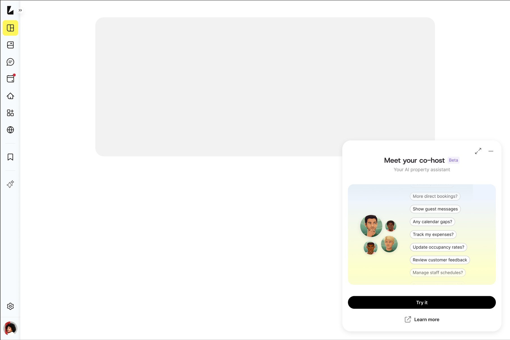
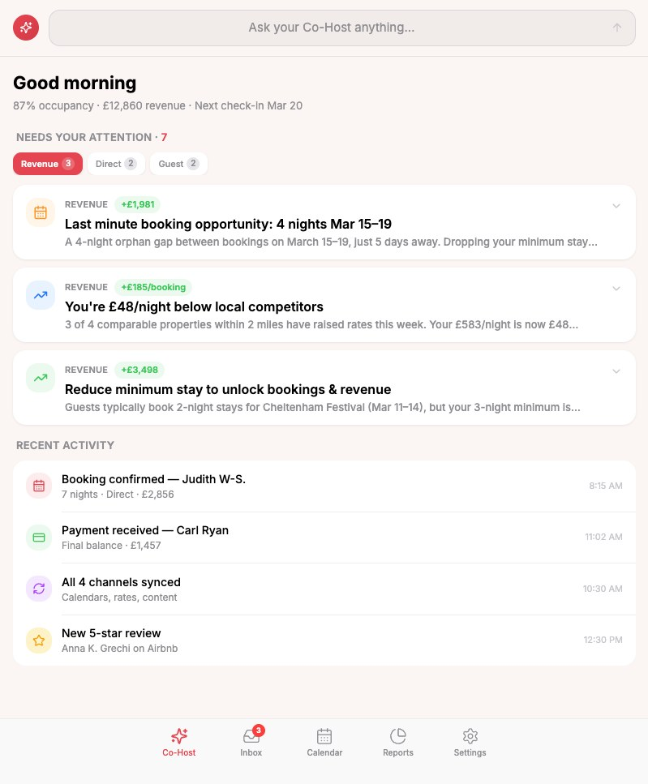
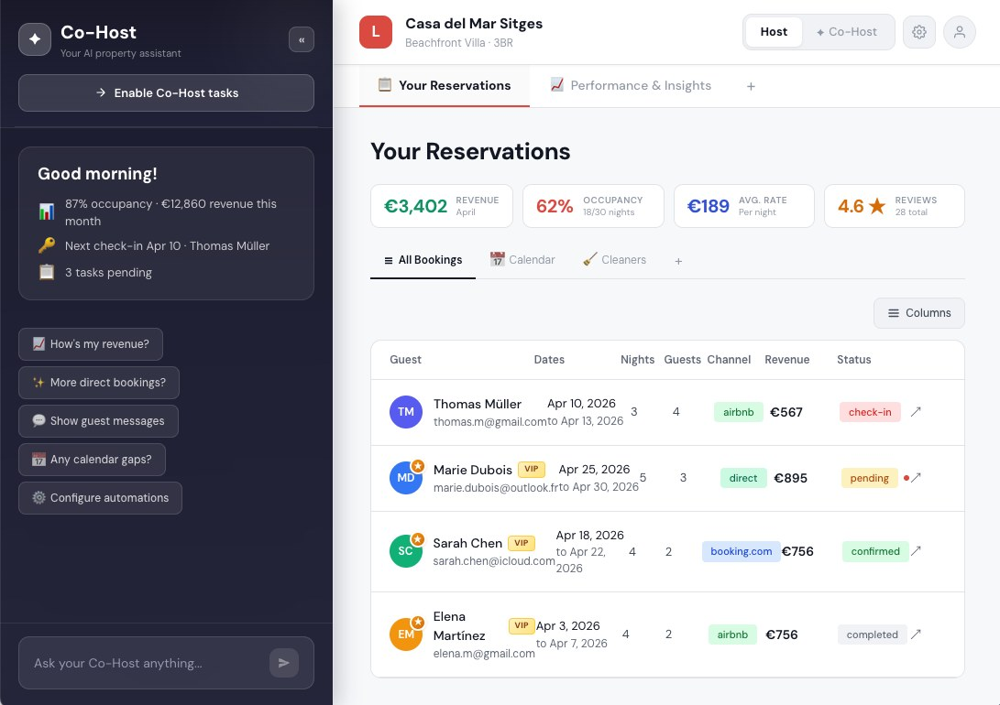
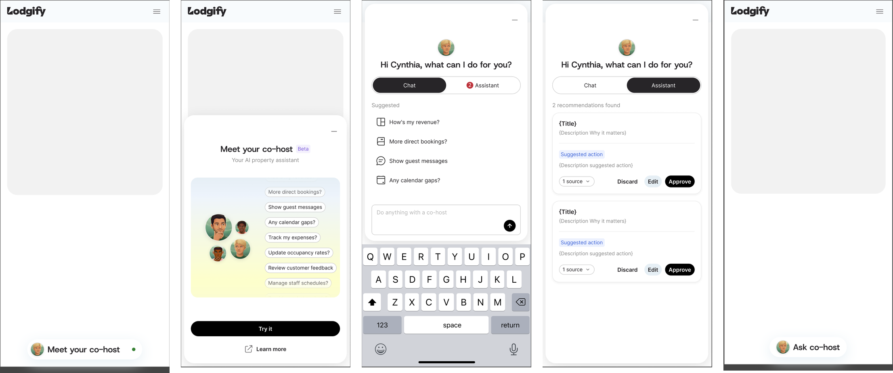
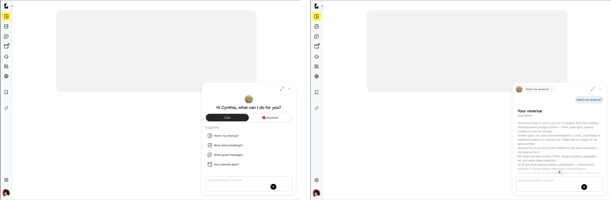
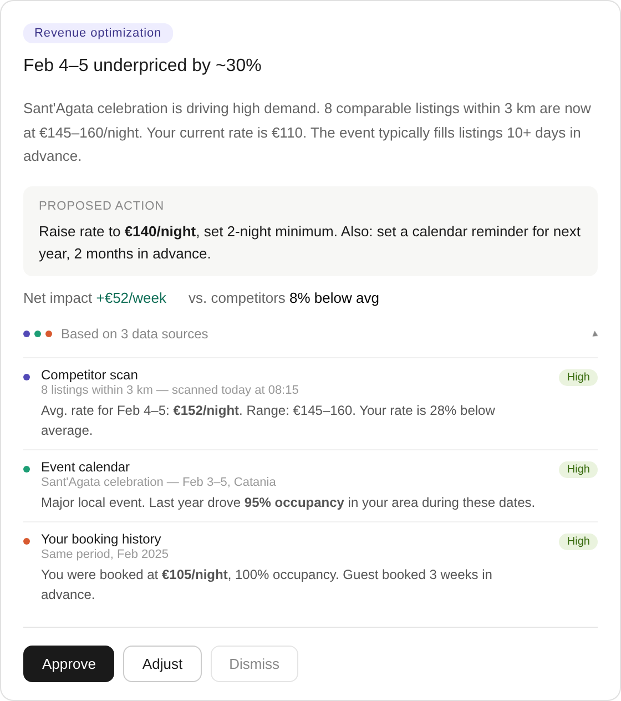
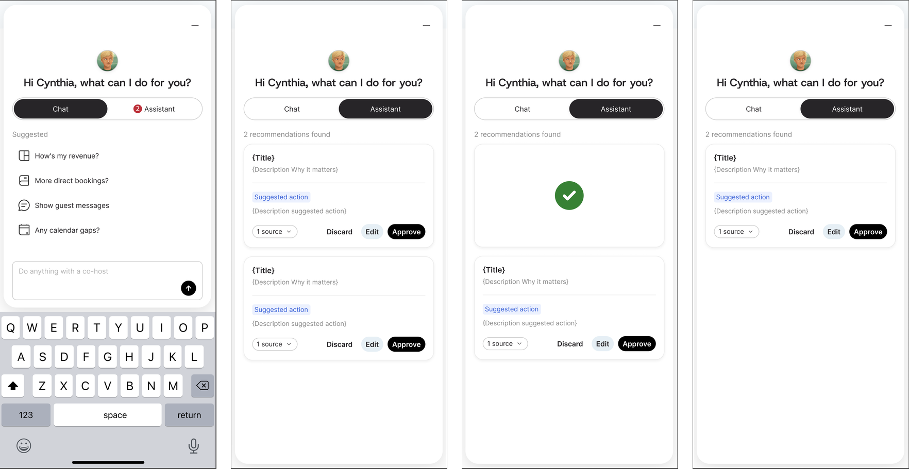

Leading the design of an AI agent that hosts trust to act on their behalf.

After three years building Lodgify's design function from 2 to 10 people, the foundations were stable. The gap was no longer the team. It was the product bet that would define the next three years: our answer to the AI shift.
I made the case to the CPDO that this bet needed one designer holding the whole solution space, with exec-level context. I stepped back from Head of Design into a Principal Designer (Interim) role for two quarters and led it hands-on.
“The role of design in an AI-era product isn’t to decorate the model. It’s to make the product trustworthy, transparent, and useful enough that a human decides to act.”
From my kick-off memo to product leadership, Sprint 0.
Lodgify is a B2B platform for vacation-rental hosts: bookings, channels, pricing, operations and guest messages. In 2025 hosts stopped asking for more features and started asking for the business to run itself.
Every property manager already juggled five or more systems, and every competitor was shipping AI. Another dashboard wasn’t going to win. Taking whole jobs off the host’s plate would.
Hosts don’t need more tools. They need to know what to do next. We reframed the brief from “make workflows faster” to “shorten the distance between a signal and a decision.”
The design target: one interface where the host engages once to switch on a system that keeps optimising toward the outcomes they want.
Trust was the real problem. Without it, the Co-host is just another chat window, and trust is a design problem, not a model problem.
A small team and a tight evidence loop: two product designers, a researcher and a PM, with the CPDO as approver. We ran five-week sprints. Inside each week, three days of ideation, test prep, customer testing and learnings, then a Friday reflect-and-share with leadership.
I owned direction, the hardest interactions and the stakeholder story. The team owned parallel exploration, testing operations, documentation and design-system detail work.
Three rounds of testing with 24 customers. Five directions explored, two killed, one landed. The test wasn’t whether we liked the design. It was whether hosts could use it and leadership would bet on it.


We rejected every default: no chat bubble, no full-screen takeover, no “AI” badge shouting for attention.


Every recommendation shows its reasoning, its sources and how confident it is. The host approves, adjusts or dismisses, and each choice teaches the Co-host something. Nothing runs silently in the background.


From concept to a tested, detailed design. Three rounds of testing with 24 customers decided what the agent does, what it asks before acting, and how it shows its work.
I ran the first sprint at concept altitude a week too long. The team was polishing a Figma direction before we’d pressure-tested it with customers. Next time: an ugly clickable prototype in hosts’ hands within five days, not ten. Testing is the only real feedback loop. Team debate is just plausible opinion.